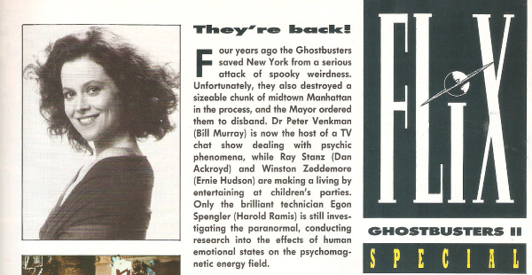

Part of the rebranding of the media review articles into into Flix, Mix, Vidz & Bitz. This one focuses on cinema, and replaced Cinefax.
| Title | Parts | Pages | w indicates a wraparound coverCovers | Year(s) | Issues | Writer | Artist | Colourist | Letterer |
|---|---|---|---|---|---|---|---|---|---|
| Flix | 1 | 1 | 0 | 1987 | 550 | John Brosnan | promo stills | [b&w] | n/a |
| Flix | 1 | 1 | 0 | 1988 | 556 | John Brosnan | promo stills | [b&w] | n/a |
| Video Extra | 1 | 1 | 0 | 1988 | 565 | Steve Keaton | promo stills | [b&w] | n/a |
| Flix | 1 | 1 | 0 | 1988 | 566 | John Brosnan | promo stills | [b&w] | n/a |
| Flix | 1 | 1 | 0 | 1988 | 570 | John Brosnan | promo stills | <-- | n/a |
| Flix | 4 | 4 | 0 | 1988 | 579, 585, 592, 605 | John Brosnan | promo stills | [b&w] | n/a |
| Flix | 4 | 4 | 0 | 1989 | 616, 619, 624, 632 | John Brosnan | promo stills | [b&w] | n/a |
| Special: How Batman Gave Warners the Shivers | 1 | 2 | 0 | 1989 | 640 | John Brosnan | promo stills | [b&w] | n/a |
| Flix | 1 | 1 | 0 | 1989 | 643 | John Brosnan | promo stills | [b&w] | n/a |
| Ghostbusters II Special | 1 | 2 | 0 | 1989 | WS2 | editorial | promo stills | <-- | n/a |
| Flix | 2 | 2 | 0 | 1990 | 684, 693 | John Brosnan | promo stills | <-- | n/a |
| Flix | 1 | 1 | 0 | 1990 | 697 | John Brosnan | promo stills | [b&w] | n/a |
| Flix | 2 | 2 | 0 | 1991 | 731, 746 | John Brosnan | promo stills | <-- | n/a |
| Flix Special: Stallone to Star as Dredd | 1 | 1 | 0 | 1993 | 844 | unknown | Steve Cook Oona Mengesphotos | <-- | n/a |
| year | episodes | pages |
| 1980 | 0 | 0 |
| 1981 | 0 | 0 |
| 1982 | 0 | 0 |
| 1983 | 0 | 0 |
| 1984 | 0 | 0 |
| 1985 | 0 | 0 |
| 1986 | 0 | 0 |
| 1987 | 1 | 1 |
| 1988 | 8 | 8 |
| 1989 | 7 | 9 |
| 1990 | 3 | 3 |
| 1991 | 2 | 2 |
| 1992 | 0 | 0 |
| 1993 | 1 | 1 |
| 1994 | 0 | 0 |
| 1995 | 0 | 0 |
| 1996 | 0 | 0 |
| 1997 | 0 | 0 |
| 1998 | 0 | 0 |
| 1999 | 0 | 0 |
| 2000 | 0 | 0 |